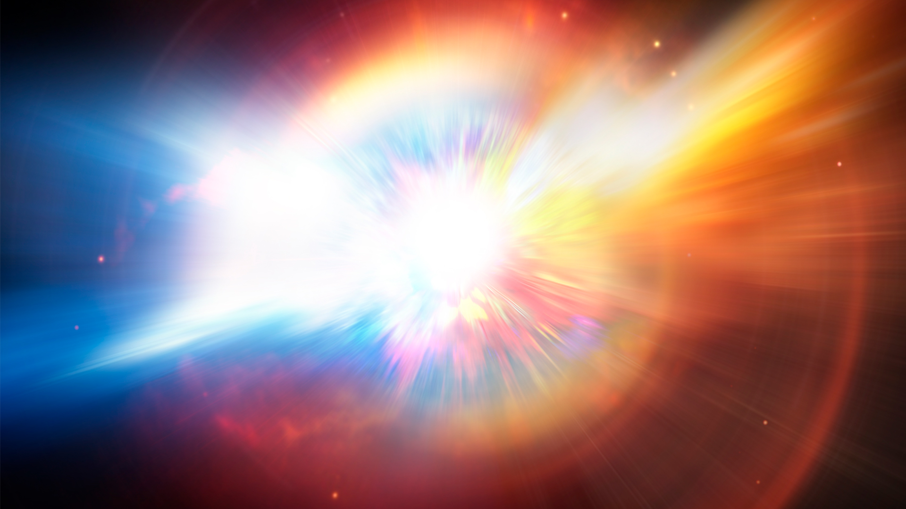

| Feature | Nova | Supernova |
|---|---|---|
| Nature | An explosion on the surface of the star. | The entire star explodes and is destroyed. |
| Outcome | The star survives. | The star is destroyed or leaves behind a Black Hole/Neutron Star. |
| Brightness | Very bright, but not as much as a Supernova. | Can be brighter than an entire galaxy. |